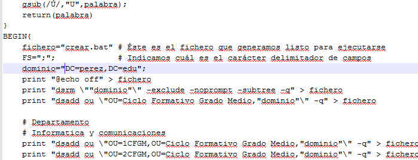

- Módulo: Administración de Sistemas Operativos
- Título del trabajo Generar usuarios
- Componentes del grupo: Silvano Pérez Yanes
- Curso Académico: 2ºASIR
- Fecha de entrega: 27 de Febrero de 2015
En esta actividad vamos a crear usuarios en active directory, mediante scripts de creación, ejecutando, varios comando que nos aparece en el documento aportado para la actividad.
Cuando hayamos instalado el programa gawk, editamos la variable del sistema en el PATH, para que reconozca los comandos que vamos a usar
Vamos al fichero xcacls para que el xcacls se compatible con el windows 2008 server
Ahora probamos algunos comandos de xcacls
A continuación, modificamos el fichero alta, para el correcto funcionamiento del script
Una vez modificado el script, procedemos a crear el fichero de creación de usuarios con los script y ejecutamos el script de creación